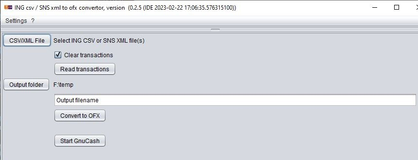

The application recognizes:
a comma or semicolon separated ING input file.
a SNS XML input file.
li>Button Output folder: Point to the directory where the generated OFX-file(s) are stored. A proposal for the "Output filename" is made, this can be changed.
Button Convert to OFX: The conversion to OFX format is started, the progres is shown in the lower panel.
Button Start GnuCash: GnuCash is started.